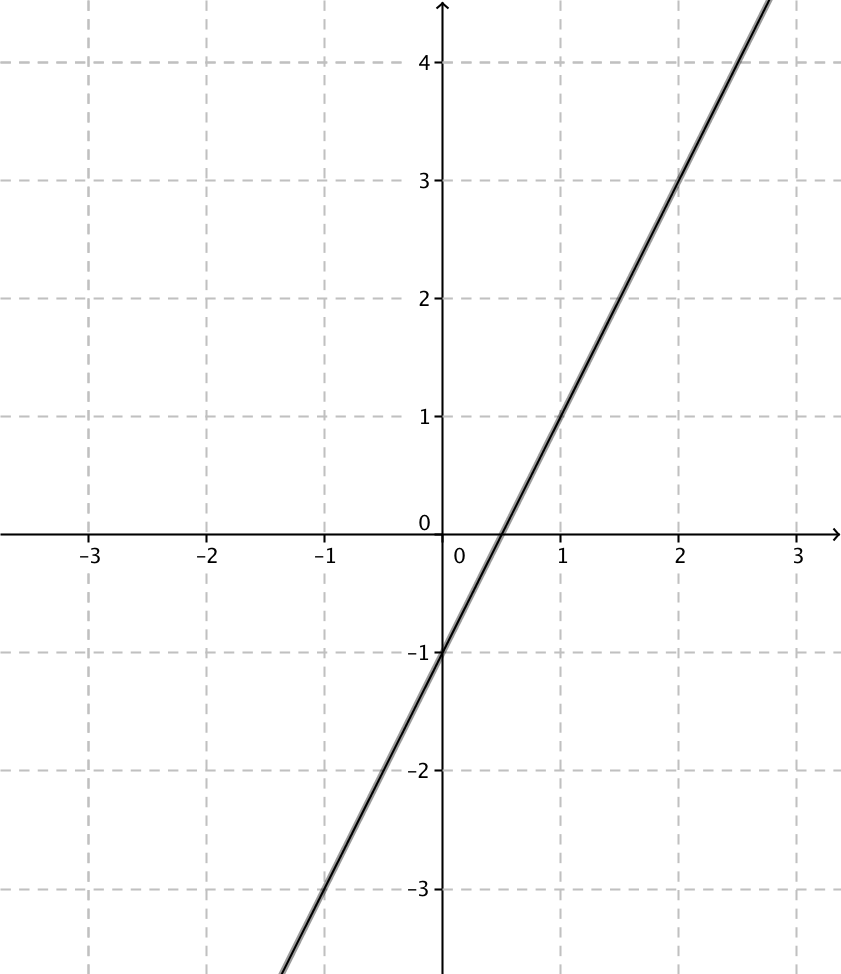

8. Linjens ekvation
Vi studerar den linje som går genom punkten \( (1,1) \) och har riktningskoefficienten 2.
Lösning
Nu vet vi inte en annan punkt på linjen så vi tar en allmän med koordinaterna \( (x,y) \). Vi får då
\( \begin{array}{l} k=\dfrac{y_2-y_1}{x_2-x_1} \\ 2= \dfrac{y-1}{x-1} \quad \mid (x-1)\\ y-1 = 2(x-1) \\ \end{array} \)
Sitationen ser ut som:

Det som vi får fram är ekvationen för den linje som går genom punkten \( (1,1) \) och vars riktningskoefficient är 2.
Allmänt bestämmer vi linjens ekvation som
\( y-y_0 = k(x-x_0). \)

Exempel 1 Bestäm ekvationen för den linje som går genom punkten \( (-2,-1) \) och vars riktningskoefficent är 2.
Lösning
Linjens ekvation får vi som \( y-y_0=k(x-x_0) \).
\( \begin{array}{rcl} y-y_0 & = & k(x-x_0) \\ y-(-1) & = & 2(x-(-2)) \\ y+1 & = & 2(x+2) \\ y+1 & = & 2x + 4\\ y & = & 2x +3 \\ \end{array} \)
Exempel 2 Bestäm ekvationen för den linje som går genom punkterna \( (-1,-1) \) och \( (4,3) \) och rita linjen.
Lösning
Linjens ekvation får vi som \( y-y_0=k(x-x_0) \). \( k=\dfrac{3-(-1)}{4-(-1)}=\dfrac{4}{5} \). Då får vi linjen som
\( \begin{array}{rcl} y-y_0 & = & k(x-x_0) \\ y-(-1) & = & \dfrac{4}{5}(x-(-1)) \quad \textrm{Vi väljer någondera av punkterna.} \\ y+1 & = & \dfrac{4}{5}(x+1) \\ y & = & \dfrac{4}{5}x + \dfrac{4}{5} -1 \\ y & = & \dfrac{4}{5}x + \dfrac{1}{5} \\ \end{array} \)
Grafen ser ut som

Hur vi ritar en linje i ett koordniatsystem
Uppgifter
- Bestäm ekvationerna för linjen som går genom punkten \( (2,1) \) och har riktningskoefficienten 3.
Vi får \( y-y_0=k(x-x_0) \)
\( y-1=3(x-2) \) som förenklas till \( y=3x-5 \).
- Bestäm ekvationerna för linjen som går genom punkten \( (-3,2) \) och har riktningskoefficienten -4.
Vi får \( y-y_0=k(x-x_0) \)
\( y-2=-4(x-(-3)) \) som förenklas till \( y=-4x-10 \).
- Bestäm ekvationerna för linjen som går genom punkten \( (4,-6) \) och har riktningskoefficienten 0.
Vi får \( y-y_0=k(x-x_0) \)
\( y-(-6)=0(x-4) \) som förenklas till \( y=-6 \).
Alternativt kan vi märka att vi har en vågrät linje, eftersom riktningskoefficientens värde är 0. Den vågräta linje som går genom punkten \( (4,-6) \) är \( y = -6 \).
- Bestäm ekvationerna för linjerna som går genom punkterna nedan och rita linjerna på papper.
- \( (-4,1) \) och \( (0,2) \).
Vi får \( y-2 = \dfrac{1-2}{-4-0}(x-0) \) som förenklas till \( y=\dfrac{1}{4}x+2 \).
- \( (-2,3) \) och \( (1,1) \).
Vi får \( y-1 = \dfrac{3-1}{-2-1}(x-1) \) som förenklas till \( y= -\dfrac{2}{3}x+\dfrac{5}{3} \).
- \( (-2,4) \) och \( (3,4) \).
Vi får \( y-4 = \dfrac{4-4}{-2-3}(x-(-2)) \) som förenklas till \( y=4 \).
- \( (-4,1) \) och \( (0,2) \).
- Bestäm ekvationen för linjen som går genom \( (-2,-2) \) och \( (1,4) \).
Vi har \( y-y_0 = \dfrac{\Delta y}{\Delta x}(x-x_0) \) som blir \( y-4 = \dfrac{4-(-2)}{1-(-2)}(x-1) \) som förenklas till \( y=2x+2 \).
- Ligger punkten \( (0,2) \) på linjen?
Om punkten \( (0,2) \) ligger på linjen så skall ekvationen vara sann,
\( 2 = 2\cdot 0 +2 \) som stämmer. Punkten ligger på linjen.
- Ligger punkten \( (0,2) \) på linjen?
- I vilka punkter skär linjen som går genom \( (-1,3) \) och \( (2,1) \) koordinataxlarna?
Linjens ekvation är \( y=-\dfrac{2}{3}x+\dfrac{7}{3} \)
Skärningspunkterna för koordinataxlarna får vi då \( x=0 \) och då \( y=0 \). Vi löser dessa ekvationer.
\( 0=-\dfrac{2}{3}x+\dfrac{7}{3} \Leftrightarrow x=\dfrac{7}{2} \) och
\( y=-\dfrac{2}{3}\cdot 0 + \dfrac{7}{3} \Leftrightarrow y=\dfrac{7}{3} \).
Punkterna är \( (0,\dfrac{7}{3}) \) och \( (\dfrac{7}{2},0) \).
Linjen \( y=kx+7 \) går genom punkten \( (2,1) \). Bestäm riktningskoefficienten \( k \)
Lös uppgiften genom att rita upp situationen på GeoGebra.
Något i stil med

Skapa först punkterna. Sedan en linje mellan punkterna och ändra linjens ekvation så att den är av formen \( y=\ldots \).
- Linjen \( y=kx+7 \) går genom punkten \( (2,1) \). Bestäm riktningskoefficienten \( k \). Lös uppgiften utan att rita på GeoGebra.
Eftersom linjen skall gå genom punkten så skall ekvationen vara sann då \( x=2 \) och \( y=1 \).
Vi löser ekvationen \( 1=k\cdot 2+7 \Leftrightarrow k=-3 \).
- En linje vars riktningskoefficient är \( -\dfrac{1}{3} \) avgränsar tillsammans med koordinataxlarna en triangel vars area är 6 a.e. Bestäm ekvationen för linjen.
Skärningspunkten för linjen och \( y \)-axeln skriver vi som \( (0,y_1) \) och skärningspunkten för linjen och \( x \)-axeln som \( (x_1,0) \).
Dessa två punkter skall linjen \( y-y_0 = -\dfrac{1}{3}(x-x_0) \) gå igenom.
Vi får ekvationerna \( y-y_1 = -\dfrac{1}{3}(x-0) \) och \( y-0= -\dfrac{1}{3}(x-x_1) \).
Dessutom gäller att arean skall ha värdet 6. Arean för en triangel är \( A=\dfrac{1}{2}bh \) som är \( 6=\dfrac{1}{2}\cdot x_1\cdot y_1 \).
Dessa tre ekvationer skall gälla samtidigt och smidigast löser vi dem på räknare. \( x_1 = 6 \) och \( y_1=2 \) .
Ekvationen för linjen är \( y=-\dfrac{1}{3}x+2 \).